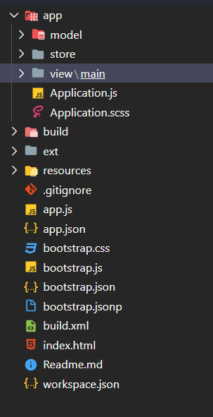
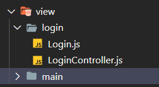

最受欢迎的教程之一是如何制作登录系统。我们将通过构建它来开始本教程。请注意，这只是创建登录系统的一种方法。还有许多其他可行的选择。这只是为了向您展示一种创建具有登录/注销功能的应用程序的方法。
本教程旨在向用户展示一种设计应用程序以包含“已登录”和“已注销”视图的方式。本教程不会尝试实现安全的数据连接，会话管理，真实身份验证等。它仅用于教育目的。
目录结构
当我们的第一个demo项目创建好之后， 我们可以看到以下项目结构

app.js:程式流程开始的主要档案，应该使用＆lt; script＆gt; 标签。 应用程序调用应用程序的控制器的其余功能。
Controller.js:它是ExtJs MVC架构的控制器文件。 这包含应用程序的所有控制，事件侦听器的最大功能的代码。 它具有为该应用程序中使用的所有其他文件定义的路径，例如store，view，model，require，mixins。
View.js:它包含应用程序的界面部分，显示给用户。 ExtJs使用各种UI丰富的视图，可以根据需要在这里扩展和自定义。
Store.js:它包含本地缓存的数据，它将在模型对象的帮助下在视图上呈现。 存储使用代理获取数据，代理具有为服务定义的路径以获取后端数据。
Model.js:它包含绑定要查看的商店数据的对象。 它有后端数据对象到视图dataIndex的映射。 在store的帮助下获取数据。
Utils.js:它不包括在MVC架构中，但是最好的做法是使代码清晰，不太复杂，更加可读。 我们可以在这个文件中编写方法，并在控制器或视图渲染器中调用它们。 这对代码可重用性目的也很有帮助。
创建登录视图组件 - Create the Login View Components
- 在
app\view目录下创建一个login文件夹 - 在
app\view\login目录下创建两个文件目录结构如下：1
2- Login.js
- LoginController.js

禁用掉 mainView - Disable mainView
应用程序的mainView配置是使用Viewport插件自动加载和实例化TutorialApp.view.main.Main的一种非常方便的方法。
但是，在选择初始视图之前，我们需要对Ext.application的启动方法进行一些评估。例如，如果用户尚未登录，我们不想创建主视图
在本练习中，让我们从{appRoot} /app.js中的应用程序配置中删除 mainView 配置。
由于我们已经删除了mainView，因此刷新您的应用程序将导致空白页，因为没有实例化任何类。
创建一个登录窗口 - Create the Login Window
接下来，让我们创建一个登录视图。为此，我们将打开空白的{appRoot} /app/view/login/Login.js文件，然后开始定义“登录窗口”。
首先，让我们定义我们的Class并扩展基础Window类。看起来像这样：
1 | Ext.define('TutorialApp.view.login.Login', { |
现在，我们已经将Login类定义为Ext.window.Window的扩展，可以使用xtype: login实例化该扩展。让我们开始为我们的class提供一些独特的属性。我们将从向窗口本身添加一些其他配置开始。
1 | Ext.define('TutorialApp.view.login.Login', { |
让我们看一下这些配置的含义。
requires
require块可确保在实例化“登录”窗口之前，我们包括了可能依赖的所有类。我们需要包含LoginController.js，因为我们将在下一行将其指定为我们的控制器。我们还需要包括Ext.form.Panel，因为我们的视图包含一个Form面板。controller
控制器配置指定一个ViewController，然后将其附加到“登录”窗口的实例。该控制器提供了一个包含与“登录”窗口或其子组件有关的所有逻辑的位置。在这里，我们指定要登录的控制器，这将是我们控制器的别名bodyPadding
bodyPadding配置纯粹是美观的。此配置在窗口主体内容的外部周围应用10px的填充。title
传递给标题配置的字符串会导致创建标头，并将字符串值添加为其标题。closable
Closable确定是否可以关闭窗口。 Windows默认情况下具有可关闭的按钮。但是，由于这是一个登录窗口，因此我们不希望用户关闭它。如果他们关闭它，将留下空白页。autoShow
Windows默认是隐藏的。将autoShow设置为true将在创建窗口后显示它。当我们希望窗口可见时，可以选择以编程方式调用窗口的show方法
现在我们已经讨论了Window的配置，让我们给它一些子组件。由于这将是一个登录表单，因此我们将创建一个Form面板作为Window的子代。然后，我们将添加两个文本字段，一个显示字段和一个提交按钮。
该文件的最终代码应如下所示：
1 | Ext.define('TutorialApp.view.login.Login', { |
Window items
我们添加到“登录”窗口的第一个配置是items。在“表单”面板和“登录”窗口本身之类的容器中，items可能包含一个组件或一个组件配置对象。items配置还可以是组件或组件配置对象的数组。这些组件将使用容器的布局layout显示在容器的主体中。xtype
每个Component类都有自己的xtype。您可以将xtype视为轻松创建Component实例的快捷方式。在这种情况下，我们为登录窗口配置了一个xtype为form的子项（form是Ext.form.Panel类的xtype）。
表单面板是特殊类型的面板，其中包括使用输入字段的便捷配置选项。Form Items
接下来，您将看到另一个items数组的熟悉面孔。在这里，我们通过使用items数组更深一层地嵌套其他项目。我们将更多组件放置在父组件（即“表单”面板）中。在这种情况下，我们的嵌套组件是组成登录表单的表单字段。我们可以快速浏览这些组件数组，因为它们很容易说明。第一项的xtype为[[ext：Ext.form.field.Text textfield]]，名称为“ username”，字段标签为“ username”，而allowBlank为“ false”。这可以归结为具有名称值和字段标签的文本字段。该字段不能留为空白并通过验证（请参见下面的“ formBind”）。
除了设置为“密码”的类型外，下一个字段几乎相同。为了安全起见，这会将您的输入变成*。
此items数组的最后一个成员是
displayfield。显示字段是未与表单一起提交的文本字段。这对于在不与用户交互数据的情况下传输数据很有用。在这种情况下，我们通知用户任何非空白密码都将允许提交表单。buttons
我们在此处添加的最后一位是buttons数组。这是用于将按钮添加到面板panel中的footer toolbar的便捷配置。该特定按钮将包含文本“登录”，用户将单击该按钮来提交登录表单。formBind
我们的Button包含一个名为formBind的配置，该配置设置为true。当Component的formBind设置为true时，将根据Form的有效性状态禁用/启用它。这意味着在两个输入字段包含值之前，按钮是不可单击的。listeners
侦听器对象配置有事件以及将响应这些事件的触发的方法/函数。在这种情况下，我们正在等待有人单击按钮。单击后，我们将事件“转发”到名为onLoginClick的方法。稍后将在我们的登录控制器中定义onLoginClick方法。
添加登录逻辑-Add Login Logic
接下来，让我们创建Login Controller，这是一个类，其中包含用于处理用户与Login视图的交互的任何逻辑。为此，我们将打开空白的{appRoot} /app/view/login/LoginController.js文件，然后开始定义“登录”窗口的逻辑。
文件内容如下:
1 | Ext.define('TutorialApp.view.login.LoginController', { |
上面的代码可能与上下文无关，但是当我们在下一节中讨论启动方法时，它将更有意义。此类包含onLoginClick方法，该方法通过单击登录按钮来调用。
这些代码段具有注释，以描述每个语句的目的，但让我们逐一查看它们以作进一步说明。
onLoginClick()
首先，我们正在创建一个名为onLoginClick的方法。这是我们将“登录”视图中的登录按钮的click事件定向到的方法。如注释中所述，您将在这里调用服务器以验证用户的凭据是否有效。这通常以AJAX或REST请求的形式出现。但是，对于本教程，我们将接受任何非空白的输入。成功之后，您将继续执行其余的代码。失败时，您将允许用户重新输入其凭据。当然，在这种情况下没有失败的可能性，所以让我们前进吧！
localStorage
在本教程中，我们将使用localStorage来维护用户登录状态。成功进行凭据检查之后，我们可以确定用户具有对主应用程序视图的适当访问权限。然后，我们可以在localStorage中设置键/值对，以使应用程序知道用户有效。接下来，我们将检查我们的初始启动方法中的TutorialLoggedIn localStorage密钥是否设置为“ true”（在下面的“启动”部分中进行了详细介绍）。getView()
ViewControllers引入了一个非常有用的方法，称为getView（）。 getView（）方法返回与从其调用ViewController关联的当前视图。在这种情况下，该视图是“登录”窗口。由于我们将登录点击视为成功登录，因此我们不再希望显示“登录”窗口。因此，我们使用this.getView（）。destroy（）获取对“登录”窗口的引用，然后销毁它。Ext.widget(‘app-main’)
现在我们已经破坏了Login窗口，我们想要更改视图以显示Main视图。在这种情况下，我们使用Ext.widget（'app-main'）实例化{appRoot} /app/view/main/Main.js视图。
app-main是指在我们的Sencha Cmd生成的{appRoot} /app/view/main.Main.js类中定义的xtype
添加启动程序逻辑-Add Launch Logic to Application.js
接下来，让我们讨论{appRoot} /app/Application.js和launch功能。
Application.js是您应用程序的核心。您可以在与view，store和model文件夹相同级别的位置找到Application.js。
它提供了一个方便的方法，称为launch，在您的应用程序加载了所有必需的类时触发。这是本教程的Application.js文件的完整代码。
1 | /** |
让我们检查一下这些部分在做什么。
requires
我们已经描述了require要做的事情，但是让我们来谈谈这个特定的数组。出于Application.js的目的，我们需要准备应用程序以加载Login或Main视图，具体取决于即将进行的登录评估的结果。
为此，我们必须同时需要TutorialApp.view.main.Main和TutorialApp.view.login.Login，以便提供两种结果。launch
如前所述，启动方法是一个功能，当您的应用程序加载了它需要运行的所有内容时，该方法就会执行。这是执行有关登录/注销应用程序用户状态逻辑的理想场所。localStorage.getItem()
下一步是检查先前设置的称为TutorialLoggedIn的localStorage密钥。我们只是将loggingIn变量设置为该键值的结果。如果不存在，则loginIn将为null。如果确实存在，那么我们先前已在LoginController的逻辑中将TutorialLoggedIn设置为true。
- Widget Ternary
大多数编程语言都包含一种称为三元运算符的条件速记形式。三元运算符使您可以最小化传统if / else语句所需的代码量。在这种情况下，我们使用三元组来表示：“如果loggingIn存在（不为null），请加载Main视图，否则加载Login视图”。然后，我们使用Ext.widget方法实例化三元运算符的结果。
Add Viewport Plugin
您可能还记得，我们在本教程的开头就从{appRoot} /app.js中删除了mainView配置。由于我们没有定义视口，因此您的主视图将不知道在哪里渲染。我们将通过混入视口插件来更改它，以便{appRoot} /app/view/main/Main.js将作为我们应用程序的视口运行。
这样，主视图将占据视图中所有可用的宽度和高度浏览器。只需在{appRoot} /app/view/main/Main.js中添加以下行即可：
1 | plugins: 'viewport', |
生成的{appRoot}/app/view/main/Main.js文件如下所示：
1 | /** |
您不需要修改{appRoot} /app/view/main/Main.js的其他任何部分，因为我们将为点击处理程序使用默认生成的onClickButton方法。
Add Main Logic
我们快完成了！现在剩下的就是为用户提供某种注销应用程序的方法，这将破坏localStorage中的TutorialLoggedIn键。此逻辑应在{appRoot} /app/view/main/MainController.js文件中进行。
您可以根据需要删除其他生成的代码。这是本教程的MainController.js的最终定义：
1 | Ext.define('TutorialApp.view.main.MainController', { |
我们在这里不需要深入，因为它基本上是我们的{appRoot} /app/view/login/LoginController.js代码的反函数。
总结此功能，onClickButton是按钮处理程序在我们生成的{appMain} /app/view/main/Main.js视图中调用的函数。检测到点击事件后，将执行以下步骤：
- 删除维持用户登录状态的localStorage项。
- 销毁当前视图，即TutorialApp.view.main.Main。
- 重新创建登录视图。
现在，您应该能够在浏览器中加载应用程序，并看到功能全面的登录/注销应用程序。